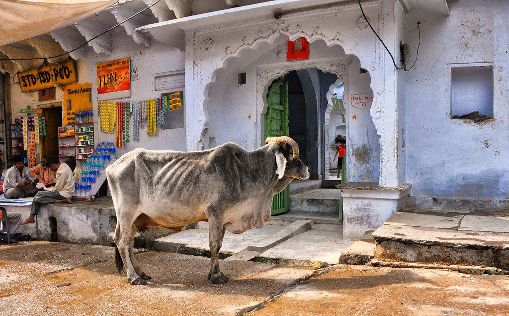

What's Really Going On
Anyone who has traveled through India has a similar story: a red light, the chaotic traffic of motorbikes and rickshaws, and in the middle of it all, a cow lying placidly on the asphalt, utterly indifferent to the chaos it's causing. No one shoves it, no one shouts, cars simply drive around it. To a Western visitor used to domestic animals staying confined to farms or designated areas, the scene can feel almost surreal. But for much of India's Hindu population, that cow in the middle of the street isn't a traffic problem — it's, quite literally, a sacred being exercising its right to be there.
The cow's sacred status in Hinduism has roots stretching back to Vedic texts more than three thousand years old, where the animal already appears linked to abundance, motherhood, and nonviolence. Over time that association deepened: the cow came to represent the goddess Kamadhenu, capable of granting any wish, and became a symbol of Ahimsa, the principle of doing no harm to any living being that sits at the core of Hinduism, Buddhism, and Jainism. Killing a cow, or even eating its meat, is then perceived not as a simple dietary transgression but as violence against something that sustains life itself.
Beyond the religious symbolism, the cow has for centuries been an economic and practical pillar of rural Indian life. It provides milk, a staple of the vegetarian diet of hundreds of millions of people; its dung is used as fertilizer and as dried cooking fuel in rural areas; and traditionally, the oxen it produced plowed the fields before agricultural mechanization. In an agrarian society, an animal that gives without asking anything in return, that feeds people without needing to be slaughtered, naturally takes on an almost maternal status. It's no accident that many Hindu families refer to the cow as Gau Mata, "mother cow."
It isn't that India worships the cow: it's that the cow represents everything India considers worth protecting.
Where This Comes From
This doesn't mean all of India shares the same relationship with the animal. The country is enormously diverse: Hindu, Muslim, Christian, Sikh, and many other communities coexist, and not all of them consider the cow sacred or restrict its consumption. In fact, India is one of the world's largest exporters of buffalo meat, a different animal that doesn't carry the same religious status. Cow politics is, in fact, a sensitive and sometimes contentious subject: some states enforce strict anti-slaughter laws while others are far more permissive, and the issue has generated real social tension at various points in the country's recent history.
What is nearly universal, though, is street-level respect for the animal, even among those who don't consider it sacred in a strict sense. It's common to see shopkeepers leave vegetable scraps at their doorstep for a passing cow, drivers navigate around one with infinite patience, or temples maintain small shelters (gaushalas) where elderly or sick cows are cared for until they die naturally. There are even organizations dedicated exclusively to rescuing abandoned cows in urban areas, a growing phenomenon as agricultural mechanization reduced the animal's traditional economic usefulness without reducing its symbolic weight.
Beyond the Basics
For a foreign visitor, understanding this context completely changes how the scene reads. A cow in the middle of traffic isn't a sign the system is failing — it's proof that the system, contradictions and all, still makes literal room for a value society collectively decided to protect: non-human life as something that deserves to coexist, not to be managed or removed for convenience. It's a radically different way of organizing public space compared to cities where any animal out of place gets removed immediately.
The cow's economic importance took on a modern, secular dimension in the 20th century with India's so-called White Revolution, launched in the 1970s around the dairy cooperative Amul. The program turned India into the world's largest milk producer within a few decades, built almost entirely on small farmers who often kept just one or two cows each. In that sense, the animal's sacred status and its role as a genuine economic lifeline for millions of rural households reinforce each other rather than competing.
Politically, cow protection remains one of India's more contentious issues. Several states have tightened anti-slaughter laws in recent years, in some cases extending prison sentences for violations, while vigilante groups claiming to protect cows have occasionally clashed with beef traders and transporters, drawing criticism from human rights organizations. The debate cuts across religion, caste, and regional identity, making the cow not just a spiritual symbol but, at times, a genuinely divisive political one.

What to Know If You Visit
A few things are worth knowing before you find yourself sharing a street with a cow in India:
- Never touch, shoo, or honk aggressively at a cow blocking traffic — patience is the expected, and safest, response.
- Beef is illegal to sell or consume in several states; check local rules before ordering meat, especially outside big cities.
- If you want to interact respectfully, many temples and gaushalas welcome visitors who bring vegetables or fodder to offer.
- Buffalo meat is a different matter entirely and widely available — don't confuse the two animals when discussing food.
- If you're unsure how to react to a cow blocking your path, just watch what nearby locals do — patience is universal here.
The Bigger Picture
In the end, the anecdote of the cow parked at the traffic light says less about the animal and more about the society around it: a culture willing to tolerate chaos and practical inconvenience in order to honor a symbol it considers bigger than traffic, bigger than being in a hurry, even bigger than modern urban logic. And maybe there, in that collective patience toward an animal that hurries for no one, lies a lesson about what a society decides is worth protecting.
Curious how nearby cultures handle similar rules? Don't miss our pieces on The Country That Measures Happiness Instead of GDP and The Animal That's Dinner in One Country and a Stuffed-Toy-Worthy Pet in Another.